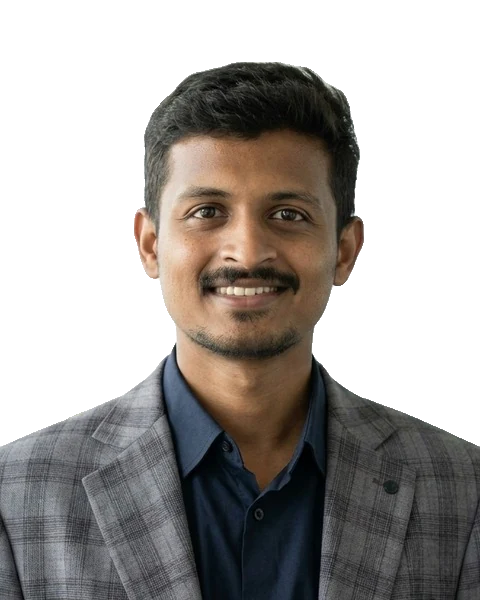

01
Portfolio.
MSc Finance student in Munich. My experience, projects, a live DCF valuation model and a KPI dashboard.
See my portfolio02 · Live project
Erstjahr.
My comparison website for international students in Germany: blocked accounts, insurance, bank accounts, the full first-year cost and taxes for Bavaria. Real 2026 prices with sources, no commission.
Open Erstjahr